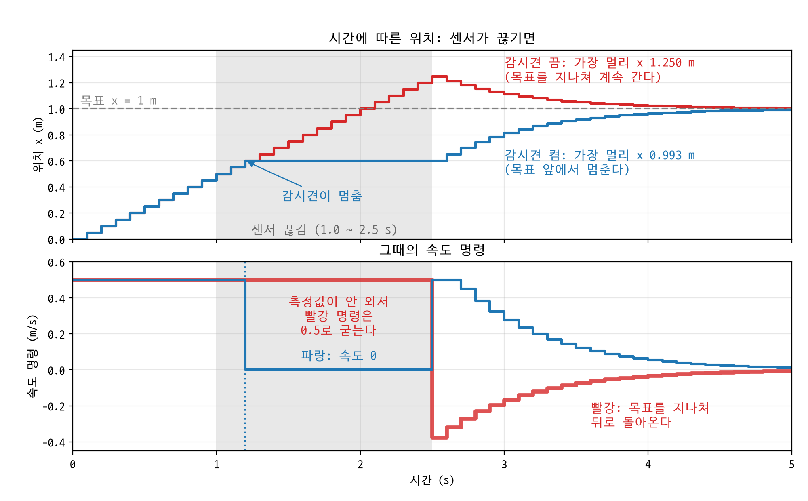
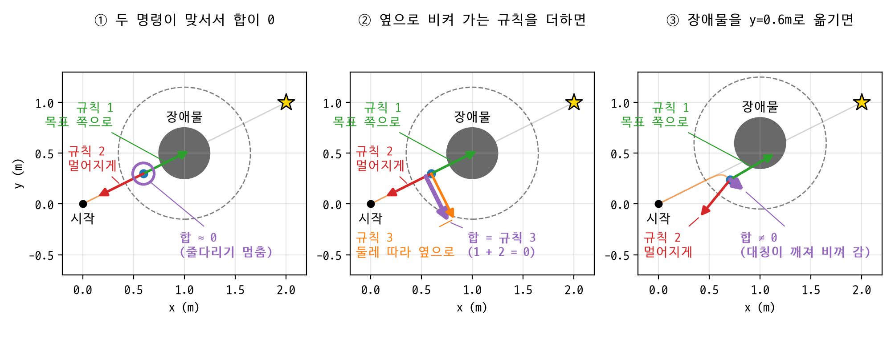

센서가 끊기면 기다려 멈추고, 장애물 앞에서는 옆으로 돌아갑니다. 세 화살표가 어떻게 방향을 만드는지 봅니다.
센서가 끊긴 동안 마지막 명령을 계속 보내면


감시 시간과 정지 장치의 차이
목표까지 가는 중 위치 센서가 1~2.5초 동안 끊어졌다고 합시다. 마지막 값이 “아직 멀다”였다면 이전 명령을 계속 보내 목표를 지나칠 수 있습니다. 감시견은 마지막 정상값을 받은 뒤 시간을 재고 한계 0.3초를 넘으면 정지 명령을 냅니다. b21_watchdog.py를 돌리면 감시견이 없을 때 가장 멀리 x=1.250m까지 가고, 켜면 0.993m에서 멈춥니다(실행 블록).
속도·힘 제한은 명령을 줄이는 장치, 비상정지는 필요할 때 동력을 끊는 별도 장치, 감시견은 통신·갱신 이상을 감시하는 장치입니다. 이 점 로봇 예제는 원리를 보여 주는 소프트웨어 모형입니다. 정지 명령을 보냈다고 관성·제동거리까지 즉시 사라지는 것은 아닙니다.
01-what-is-a-robot\b21_watchdog.py · 읽을 줄 5–26
cd C:\code\src\robo\vol3\01-what-is-a-robot
..\..\.venv\Scripts\python.exe b21_watchdog.py감시견 끔: 가장 멀리 x 1.250m, 멈춘 주기 0번, 마지막 위치 x 1.004m
감시견 켬: 가장 멀리 x 0.993m, 멈춘 주기 13번, 마지막 위치 x 0.993m센서가 1.0~2.5초 끊겼을 때 감시견 없이는 마지막 명령을 계속 보내 x=1.25m까지 갑니다. 15행의 t - 마지막_시각 > 감시_한계 한 줄이 이를 막습니다.
이 쪽의 그림을 만든 파일(같은 폴더, 실행하면 그림 PNG를 저장): 01-what-is-a-robot\s29_watchdog.py
세 화살표를 하나씩 더합니다


세 화살표를 더하는 코드
목표는 (2,1), 장애물 중심은 (1,0.5)m, 반지름은 0.25m입니다. 먼저 목표를 향하는 속도를 만듭니다. 장애물 표면이 0.4m 안에 감지되면 바깥쪽 화살표를 더합니다. 정면에서는 목표로 끄는 화살표와 바깥으로 미는 화살표가 일직선 반대가 되어 상쇄될 수 있습니다.
둘레 = np.array([-바깥[1], 바깥[0]])
if np.dot(둘레, 목표 - 잰_위치) < 0:
둘레 = -둘레
속도 = 속도 + 세기 * 둘레바깥은 장애물에서 로봇 쪽의 단위 방향, [-y,x]는 그 방향을 90° 돌린 접선입니다. 내적이 음수면 그 접선 방향이 목표에서 멀어지는 쪽이므로 반대로 뒤집습니다. 그다음 장애물 옆을 따라 움직일 성분을 더합니다.
01-what-is-a-robot\b22_sense_obstacle.py · 읽을 줄 3–11
cd C:\code\src\robo\vol3\01-what-is-a-robot
..\..\.venv\Scripts\python.exe b22_sense_obstacle.py[0. 0.] → 감지 없음
[0.5 0.25] → 표면까지 0.309m, 장애물에서 나를 향한 방향 [-0.894 -0.447]
[0.75 0.2 ] → 표면까지 0.141m, 장애물에서 나를 향한 방향 [-0.64 -0.768]avoidance_tools.py의 장애물_감지가 돌려주는 값을 세 위치에서 찍어 봅니다. 감지 범위(0.4m) 밖이면 None, 안이면 표면까지 거리와 바깥 방향입니다.
이 쪽의 그림을 만든 파일(같은 폴더, 실행하면 그림 PNG를 저장): 01-what-is-a-robot\s30_avoid_forces.py
이 쪽의 예제가 불러 쓰는 도우미 파일(직접 실행하지 않고 같은 폴더에 둡니다): 01-what-is-a-robot\avoidance_tools.py
도착 여부와 충돌 여부를 따로 봅니다
목표 별에 도착해도 중간에 회색 장애물을 뚫었다면 회피에 성공한 것이 아닙니다. 목표까지 남은 거리와 장애물 표면까지 거리를 따로 읽습니다.
도착·충돌·정체의 교안 수치
| 규칙 | b23 실행 결과 | 표면까지 최소 거리 | 목표까지 최종 거리 |
|---|---|---|---|
| 목표만 | 충돌 | −0.232m | 0.000m |
| 목표+밀려나기 | 정체 | +0.200m | 1.568m |
| 목표+밀려나기+옆으로 | 도착 | +0.229m | 0.000m |
표면까지 거리가 음수이면 점이 장애물 안으로 들어갔습니다. 첫 규칙은 목표에 도착했지만 충돌했으므로 성공으로 볼 수 없습니다. 둘째는 충돌을 피했지만 목표에서 멈춰 서므로 도착에 실패했습니다. 이 예제의 셋째 규칙이 두 조건을 함께 만족합니다.
이것은 단순한 국소 회피 규칙입니다. 복잡한 장애물 배치와 센서 조건에서 항상 목표에 도달한다는 보장은 아닙니다.
01-what-is-a-robot\b23_three_tries.py · 읽을 줄 7–19
cd C:\code\src\robo\vol3\01-what-is-a-robot
..\..\.venv\Scripts\python.exe b23_three_tries.py1. 목표만 보고 간다
[X] 충돌: 장애물 표면과 가장 가까울 때 -0.232m, 목표까지 0.000m
2. 장애물에서 밀려난다
[!] 못 감: 장애물 표면과 가장 가까울 때 +0.200m, 목표까지 1.568m
3. 밀려나면서 옆으로 돈다
[O] 도착: 장애물 표면과 가장 가까울 때 +0.229m, 목표까지 0.000m세 규칙(목표만 / 밀려나기 / 밀려나며 옆으로)의 결과를 충돌·정체·도착으로 판정합니다. 표면까지 거리가 음수이면 장애물을 뚫은 것입니다.
01-what-is-a-robot\b24_avoid_plot.py · 읽을 줄 5–28 · 그림 파일을 저장하므로 임시 폴더에서 돌립니다
cd $env:TEMP
C:\code\src\robo\.venv\Scripts\python.exe C:\code\src\robo\vol3\01-what-is-a-robot\b24_avoid_plot.py저장: avoid.png세 규칙의 경로를 한 그림(avoid.png)에 겹쳐 그립니다. 판정이 아니라 모양을 눈으로 확인하는 파일입니다.
따라 하기: 장애물 위치만 바꿉니다
목표와 로봇 출발점은 두고 장애물만 조금 옆으로 옮깁니다. 세 화살표가 더 이상 정면으로 맞서지 않으면 멈췄던 로봇도 움직일 수 있습니다.
장애물 위치 하나만 바꾸는 실행 명령
명령과 실제 출력은 이 쪽 아래 “내 컴퓨터에서 돌려 보기”에 있습니다(b23_three_tries.py, --obstacle-y 0.6).
기본 장면에서 둘째 규칙이 왜 정체되는지 화살표로 확인한 뒤 y만0.6m로 바꿉니다. 당김과 밀림이 더는 정확히 정반대가 아닐 수 있습니다. 비교할 값은 각 시도의 충돌 여부, 표면까지 최소거리, 최종 목표거리입니다. 공용 모듈을 직접 고쳐 되돌리는 대신 기존 실습의 옵션을 씁니다.
01-what-is-a-robot\b23_three_tries.py --obstacle-y 0.6 · 읽을 줄 8–10
cd C:\code\src\robo\vol3\01-what-is-a-robot
..\..\.venv\Scripts\python.exe b23_three_tries.py --obstacle-y 0.61. 목표만 보고 간다
[X] 충돌: 장애물 표면과 가장 가까울 때 -0.160m, 목표까지 0.000m
2. 장애물에서 밀려난다
[O] 도착: 장애물 표면과 가장 가까울 때 +0.214m, 목표까지 0.000m
3. 밀려나면서 옆으로 돈다
[O] 도착: 장애물 표면과 가장 가까울 때 +0.242m, 목표까지 0.000m장애물만 y=0.5에서 0.6으로 옮겼습니다. 정면 상쇄가 풀려 둘째 규칙도 도착하고, 첫째 규칙의 충돌 깊이는 −0.232에서 −0.160으로 얕아집니다.
현실 바닥을 바꾸면 멈출 거리도 달라집니다
같은 속도의 상자를 거친 바닥과 미끄러운 바닥에 놓아 보세요. 더 늦게 멈추는 몸에는 같은 장애물 감지 거리도 짧을 수 있습니다.
바닥이 바뀐 정지거리 검산
선택 확인 · 마찰1에서 연습하다0.2바닥에 놓으면 정지거리는?
같은 초기속도와 일정 미끄럼마찰 모형에서는 약다섯 배입니다. 실제 장치에서는 구름·접촉·제어도 영향을 주므로 모형 조건을 함께 말해야 합니다.
이 숫자는 새 장애물 회피의 성공을 보장하지 않습니다. 더 멀리 미끄러지는 몸에서는 같은 회피 규칙과 센서 범위도 부족해질 수 있습니다.
하나의 고리로 다시 묶습니다
센서는 지금 자리와 앞의 장애물을 알려 줍니다. 판단은 정보가 새것인지 확인한 뒤 방향을 고르고, 몸이 움직이면 다시 잽니다. 다음에는 이 숫자를 누구의 눈금자로 쟀는지 보겠습니다.
센서에서 행동까지 연결
센서가 지금 어디인지 알려 주면 판단이 목표·장애물·정보의 신선도를 함께 보고 속도 명령을 고릅니다. 행동은 제한과 물리 반응을 거쳐 몸을 움직입니다. 다시 잰 다음 계속합니다. 이제 카메라가 숫자를 줬을 때 “어느 축과 원점으로 잰 값인가”까지 확인해야 합니다. 그 질문이 다음 좌표계 수업입니다.
01-what-is-a-robot\b25_avoid_noisy.py · 읽을 줄 5–16
cd C:\code\src\robo\vol3\01-what-is-a-robot
..\..\.venv\Scripts\python.exe b25_avoid_noisy.py2. 밀려나기, 잡음만: 20번 중 도착 20번, 충돌 0번, 걸린 시간 10.9~17.5초
2. 밀려나기, 잡음+미끄러짐: 20번 중 도착 20번, 충돌 0번, 걸린 시간 8.4~9.9초
3. 밀려나며 옆으로, 잡음만: 20번 중 도착 20번, 충돌 0번, 걸린 시간 5.7~6.1초
3. 밀려나며 옆으로, 잡음+미끄러짐: 20번 중 도착 20번, 충돌 0번, 걸린 시간 6.4~6.7초잡음과 미끄러짐을 넣어 같은 규칙을 20번씩 돌립니다. 판단의 규칙이 잡음에 강한지 봅니다(도착 20/20, 충돌 0).
스스로 확인하기
답은 글에서 찾지 않고 예제를 직접 돌리거나 한 줄 바꿔 돌려서 얻습니다. 숫자는 이 컴퓨터에서 나온 값입니다.
수업 근거와 원문 보기
교안·교과서·기존 1일차 필기와 그림을 하나의 설명 흐름으로 재구성했습니다. 아래 쪽수는 PDF 파일의 페이지 순서입니다. 예전 그림 안의 슬라이드 쪽수는 수정 전 교안의 번호일 수 있습니다.
교안: 36쪽, 37쪽, 38쪽, 39쪽, 40쪽, 41쪽
교과서: 45쪽, 46쪽, 47쪽, 48쪽, 49쪽, 50쪽, 51쪽, 52쪽, 53쪽
기존 실습 필기와 파일명·축 약속 교정. 그림과 코드는 기존 학습 폴더의 보관 사본에서 필요한 부분만 재사용했습니다.
재사용 자료: s29_watchdog.png, s30_avoid_forces.png, b23_three_tries.py, avoidance_tools.py
이 글의 출력 숫자는 이 컴퓨터(MuJoCo 3.17.0, 파이썬 3.12.3)에서 예제를 직접 돌린 값입니다. 그림은 해당 s## 파일이 그린 것입니다. 본문의 손계산 예는 조건을 함께 적었습니다.